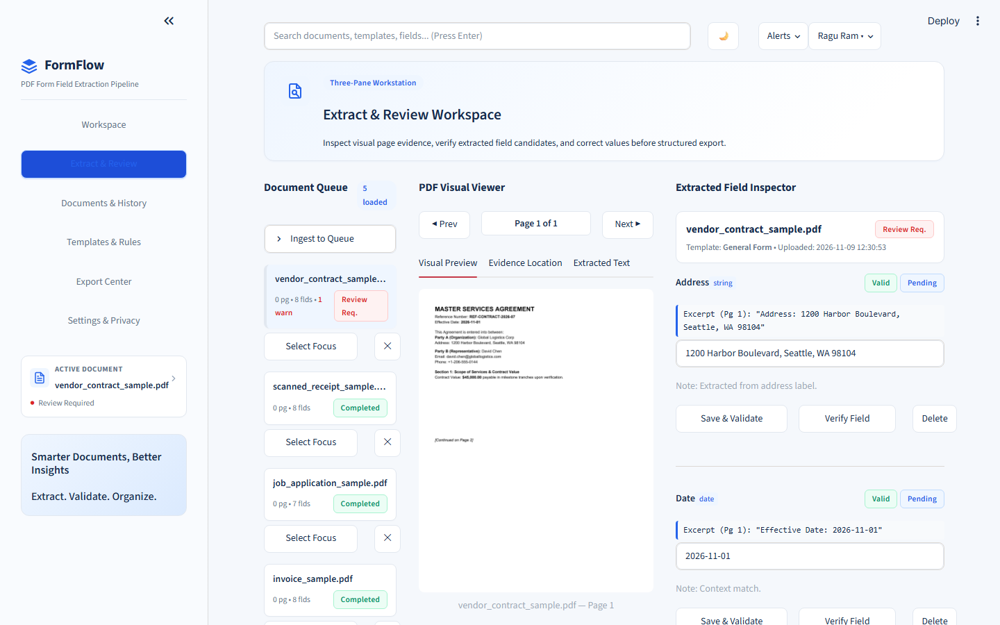

FORMFLOW
PDF WORKSTATION.
A local-first, zero-cloud Document AI workspace turning native and scanned PDF forms into validated structured records via a Three-Pane Review Workstation — Document Queue, 160+ DPI coordinate viewer, and Editable Field Inspector.

HUMAN-IN-THE-LOOP PDF FORM INTELLIGENCE AT ZERO CLOUD COST.
Cloud Document AI services charge per page and expose confidential forms externally. FormFlow runs 100% locally with coordinate provenance for every extracted value.
Three-Pane Workstation
Left Document Queue, Center 160+ DPI PDFium visual evidence viewer, and Right Editable Field Inspector with candidate history.
Smart Scanned-Page Trigger
Inspects selectable character count per page; pages below 45 chars automatically route through Tesseract v5.4 OCR.
Coordinate BBox Provenance
Preserves token bounding boxes (x0, top, x1, bottom) and alternative candidate values inside evidence metadata.
Type-Safe Validation
Normalizes dates to ISO-8601, strips currency noise into clean decimals, and verifies phone/email formatting rules.
SHA-256 + Key Collision Guard
Detects both exact binary PDF duplicates via SHA-256 and logical business-key duplicates across batches.
Sanitized JSON & CSV Exports
Guarded SQLite WAL persistence with audit logs plus formula-injection-safe JSON and CSV dataset outputs.
HOW IT WORKS.
PDFium/pdfplumber extracts spatial tokens, triggers Tesseract OCR when sparse, ranks field candidates, and persists to WAL SQLite.
PDF Upload
SHA-256 duplicate & file safety check.
Text / Render
pypdfium2 160+ DPI + pdfplumber coords.
Auto OCR
Tesseract 5.4 triggered if chars < 45.
Rank & Validate
Anchor matching + ISO/decimal checks.
3-Pane Review
Human edit + formula-safe JSON/CSV.
APPLICATION SCREENSHOTS.
Live screens captured from the running application. Click any image to view full size, or follow setup instructions in the GitHub repository.
EXTRACTION & SAFETY SPECIFICATIONS.
Key modules, rules, safety checks, and automated test results documented in the repository.
| Stage | Engineering Rule | Security / Accuracy Benefit |
|---|---|---|
| OCR Fallback Heuristic | Page selectable char count < 45 chars | Seamless native + scanned hybrid PDFs |
| Candidate Ranking | Context label anchors + suffix heuristics | Preserves runner-up evidence for review |
| PDF Rasterizer | Google C++ PDFium at 160+ DPI | Crisp glyph clarity for dense tables |
| Test Verification | Parser, OCR, validator & export suite | 41 / 41 Pytest Passed |
CORE TECHNOLOGIES.
Frameworks, databases, visualization tools, and testing libraries used in FormFlow.
FUTURE ENHANCEMENTS.
Upcoming improvements planned for FormFlow.
EXPLORE SOURCE & DOCS.
View the complete codebase, sample datasets, quick-launch scripts, and automated test suites on GitHub.